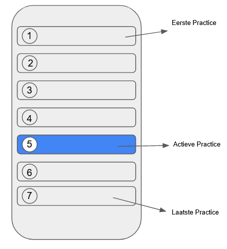

Intro
Hallo, In de vorige post1 hebben is de integration test geschreven. Nu faalt deze test omdat de app nog niet gemaakt is, maar daar gaat in deze post verandering in komen! Maar, omdat ik (zoveel mogelijk) test driven probeer te werken begint deze post opnieuw met tests… Alleen dit keer zijn het Widget tests. Deze tests lijken in eerste instantie veel op de integration test. Het verschil is dat deze tests losse onderdelen, Widgets, testen in plaats van het geheel (wat we doen met de integration test).
Laten we beginnen!
Widget Tests
Een widget test2 is een test wat een onderdeel van de User Interface (UI) test. Hetgeen dat er getest gaat worden is wederom gebaseerd op de ruwe schets (hieronder weergeven). En met de widget test, wordt in dat geval ook dezelfde logica getest (mede doordat de app nog niet zo complex is).

In onderstaande Widget test zijn de tests in verschillende groepen verdeelt, omdat dit losse Widgets zijn.
De eerste groep is de DailyPracticeApp groep, en die test de Widget DailyPracticeApp. Wanneer je deze weergeeft verwacht ik dat de PracticesPage wordt weergeven. De test werkt als volgt:
- Je rendert (weergeven van) de Widget met
tester.pumtWidget() - Je zoekt de
PracticesPagewordt weergeven metfind.byType() - Je test de verwachting (
expect) dat er 1 Widget met het typePracticesPageis gerendert (findsOneWidget).
In bovenstaande test zit een structuur.
- De test wordt voorbereid (in dit geval door je Widget te renderen)
- Je zoekt iets (de
PracticesPage) - Je test je verwachting
Deze structuur wordt Arrange, Act en Assert genoemd. Al moet ik zeggen dat Arrange en Act in dit geval zijn samengevoegd tot het renderen van de Widget. Een test die deze structuur beter aanhoud zou de volgende kunnen zijn:
- Je rendert een Widget met een knop (Arrange)
- Je voert een actie uit, deze actie is op de knop drukken (Act)
- Je verwacht dat onButtonClick (bijvoorbeeld) 1x wordt uitegevoerd (Assert)
Je zult deze structuur in veel tests terug vinden omdat het structurenen van tests de tests leesbaarder maken!
De volgende test groep PracticesPage, test ongeveer hetzelfde, maar dan wordt er getest of er een andere Widget gerenderd wordt (PracticesView). Hierna volger er interessantere tests, namelijk de PracticesView groep.
In deze groep wordt er namelijk getest of de app titel en alle practices worden gerenderd. Als eerste de app titel, die vindt je door in de AppBar te kijken (een Widget dat bovenaan je mobiele scherm verschijnt). En daarin te zoeken naar de titel ‘Daily Practices’.
Tot slot, wordt er getest of alle practices in de lijst kunnen gevonden. Maar dit heeft ook wat belemmeringen. Normaliter kan je namelijk alleen testen wat er op dat moment op je scherm verschijnt. Daarom gebruiken we net als in de integration tests de scroll functionaliteit. Dat resulteert in de volgende stappen: * Zoek een Scrollable (dat is de lijst) * Controleer of de eerste practice is gerenderd * Scroll door tester.fling() te gebruiken (let op: je moet je scherm dan verversen door tester.pumpAndSettle() aan te roepen) * Test of de laatste practice is gerenderd
Vervolgens wordt dezelfde tactiek gebruikt om te testen of er 1 actieve practice is. Maar hiervoor wordt er aan de actieve practice een speciale Key meegeven waarop gezocht kan worden. Dat wordt gebruikt om net zo lang te scrollen totdat de actieve practice in beeld is.
Dit waren de Widget testen! Op dit moment zullen ze falen en dat kan je zien door
flutter test
uit te voeren! Omdat er verder geen functionaliteit in de basis app hoeft te zitten kan er eindelijk aan de app gewerkt worden!
PS: Ik heb van een collega geleerd om je groepen en tests op de volgende manier te benoemen:
- De buitenste groep is de class of functie naam die je wilt testen
- Dan schrijf je in de test wat die moet doen, dan kan je namelijk de groep en de test lezen als 1 zin.
- Bijvoorbeeld: DailyPracticeApp, renders PracticesPage
- Maar wanneer je als in de zin gaat gebruiken, dan maak je een nieuwe groep!
- Bijvoorbeeld, DailyPracticesApp, (als) je op de knop drukt (dan) render je een succes bericht (de ‘als’ en ‘dan’ schrijf je niet expliciet op)
- Groep: DailyPracticesApp
- Groep: je op de knop drukt
- Test: render je een succes bericht
- Bijvoorbeeld, DailyPracticesApp, (als) je op de knop drukt (dan) render je een succes bericht (de ‘als’ en ‘dan’ schrijf je niet expliciet op)
- Dan schrijf je in de test wat die moet doen, dan kan je namelijk de groep en de test lezen als 1 zin.
import 'package:daily_practices_app/features/home/home.dart';
import 'package:flutter/material.dart';
import 'package:flutter_test/flutter_test.dart';
import 'package:daily_practices_app/app/app.dart';
void main() {
group('DailyPracticeApp', () {
testWidgets('renders PracticesPage', (tester) async {
await tester.pumpWidget(
const DailyPracticeApp(),
);
expect(find.byType(PracticesPage), findsOneWidget);
});
group('PracticesPage', () {
testWidgets('renders PracticesView', (tester) async {
await tester.pumpWidget(
const DailyPracticeApp(),
);
expect(find.byType(PracticesView), findsOneWidget);
});
});
group('PracticesView', () {
Widget buildSubject() {
return const MaterialApp(home: PracticesView());
}
testWidgets('renders AppBar with title text', (tester) async {
await tester.pumpWidget(buildSubject());
expect(find.byType(AppBar), findsOneWidget);
expect(
find.descendant(
of: find.byType(AppBar),
matching: find.text('Daily Practices'),
),
findsOneWidget,
);
});
testWidgets('renders all listitems', (tester) async {
await tester.pumpWidget(buildSubject());
final listFinder = find.byType(Scrollable);
expect(listFinder, findsOneWidget);
// Verify that the first practice can be found
expect(find.text('Sleep eight hours'), findsOneWidget);
// Scroll to the bottom
await tester.fling(
listFinder,
const Offset(0, -500),
10000,
);
await tester.pumpAndSettle();
// Verify that the last practice can be found
expect(find.text('Deep breathing'), findsOneWidget);
});
testWidgets('one practice should be active', (tester) async {
await tester.pumpWidget(buildSubject());
final listFinder = find.byType(Scrollable);
expect(listFinder, findsOneWidget);
final activeItemFinder = find.byKey(const ValueKey('ActivePractice'));
// Find the active practice
await tester.scrollUntilVisible(
activeItemFinder,
500.0,
scrollable: listFinder,
);
expect(activeItemFinder, findsOneWidget);
});
});
});
}De App
main.dart
Dan is nu toch echt het moment, het bouwen van de app. Omdat testen nu geschreven zijn, is het (hopelijk) vrij gemakkelijk om de “echte” code te schrijvenn. Volgens de testen begin je namelijk met het maken van de DailyPracticesApp. Dit doe je door in main.dart de DailyPracticesApp te runnen met runApp().
Even terug, main.dart en runApp() zijn nieuwe termen. Waarvoor dienen ze eigenlijk?
Wanneer je app start moet het ergens beginnen, dat is je main.dart en daarin de main() functie. Dus wanneer je de app opent, is de main() functie het eerste wat uitgevoerd wordt! Ok, en runApp()? Daarvoor is het belangrijk om te weten hoe Flutter op de achtergrond een app opbouwt. De term Widget is al een aantal keer voorbij gekomen en in Flutter zijn Widgets erg belangrijk. Zo belangrijk dat Flutter alleen maar Widgets kent! En uit deze Widgets onstaat een Widget Tree (zelfs 3 afzonderlijke trees^LINK NAAR VIDEO). Het probleem is dat een boom ergens moet beginnen. Daarvoor zorgt runApp(). Deze functie maakt de app die je uitvoert (in dit geval DailyPracticeApp() wat een Widget is) de root van de Widget Tree. Daarna kan je app zoveel Widgets toevoegen aan de Tree als je maar wilt!
app.dart
Wanneer de DailyPracticesApp aan de Root is toegevoegd kan je de MaterialApp3 maken. Dit is een handige Widget die veel voor je doet (zie de documentatie voor verdere info). In dit geval zijn er themas mee gegeven voor de kleuren en een home page! Dat is de PracticesPage.
import 'package:daily_practices_app/features/home/home.dart';
import 'package:flutter/material.dart';
import 'package:daily_practices_app/theme/theme.dart';
class DailyPracticeApp extends StatelessWidget {
const DailyPracticeApp({super.key});
@override
Widget build(BuildContext context) {
return MaterialApp(
theme: FlutterPracticesTheme.light,
darkTheme: FlutterPracticesTheme.dark,
home: const PracticesPage(),
);
}
}home.dart
In de PracticesPage wordt de PracticesView gerenderd (het is de bedoeling dat er nog andere code bijkomt). In de PracticesView wordt er een Scaffold Widget4 aangemaakt waardoor we een titel kunnen toevoegen (AppBar5) en een ListView6 waarin alle practices aan een lijst toegevoegd kunnen worden. De practices zijn Cards7 en 1 van de practices is nu actief (dat wordt voor nu bepaald door een willekeurig getal; code regel 119).
import 'dart:math';
import 'package:flutter/material.dart';
const practices = <Map<String, dynamic>>[
{
'id': 1,
'practice': 'Sleep eight hours',
},
{
'id': 2,
'practice': 'Eat two meals instead of three',
},
{
'id': 3,
'practice': 'No TV (or YouTube)',
},
{
'id': 4,
'practice': 'No junk food',
},
{
'id': 5,
'practice': 'No complaining for one whole day',
},
{
'id': 6,
'practice': 'No gossip',
},
{
'id': 7,
'practice': 'Return an e-mail from five years ago',
},
{
'id': 8,
'practice': 'Express thanks to a friend',
},
{
'id': 9,
'practice': 'Watch a funny movie or a stand-up comic',
},
{
'id': 10,
'practice': 'Write down a list of ideas. The ideas can be about anything',
},
{
'id': 11,
'practice':
'Read a spiritual text. Any one that is inspirational to you. The bible, the Tao te Ching, anything you want',
},
{
'id': 12,
'practice':
'Say to yourself when you wake up, "I am going to save a life today. Keep an eye out for that life you can save',
},
{
'id': 13,
'practice': 'Take up a hobby. Do not say you do not have time',
},
{
'id': 14,
'practice':
'Write down your entire schedule. The schedule you do everyday. Cross out one item and do not do that anymore',
},
{
'id': 15,
'practice': 'Suprise someone',
},
{
'id': 16,
'practice': 'Think of ten people you are grateful for',
},
{
'id': 17,
'practice':
'Forgive someone. You do not have to tell them. Just write it down on a piece of paper and burn the paper (or throw it away)',
},
{
'id': 18,
'practice': 'Take the stairs instead of the elevator',
},
{
'id': 19,
'practice':
'When you find yourself thinking of that special someone who is causing you grief, think very quietly, "No". If you think of him and (or?) her again, think loudly, "No!" Again? Whisper, "No!" Again, say it. Louder. Yell it. Louder. And so on',
},
{
'id': 20,
'practice': 'Tell someone every day that you love them',
},
{
'id': 21,
'practice': 'Do not have sex with someone you do not love',
},
{
'id': 22,
'practice': 'Shower. Scrub. Clean the toxins of your body',
},
{
'id': 23,
'practice':
'Read a chapter in a biography about someone who is an inspiration to you',
},
{
'id': 24,
'practice': 'Make plans to spend time with a friend',
},
{
'id': 25,
'practice':
'If you think, "Everything would be better of if I were death" then think. "That is really cool. Now I can do anything I want and I can postpone this thought for a while, maybe even a few months." Because what does it matter now? The planet might not even be around in a few months',
},
{
'id': 26,
'practice': 'Deep breathing',
},
];
final activePractice = Random().nextInt(26) + 1;
class PracticesPage extends StatelessWidget {
const PracticesPage({super.key});
@override
Widget build(BuildContext context) {
return const PracticesView();
}
}
class PracticesView extends StatelessWidget {
const PracticesView({super.key});
@override
Widget build(BuildContext context) {
return Scaffold(
appBar: AppBar(
title: const Text('Daily Practices'),
),
body: ListView.builder(
padding: const EdgeInsets.all(8),
itemCount: practices.length,
itemBuilder: (BuildContext context, int index) {
if (index == activePractice) {
return Card(
key: const Key('ActivePractice'),
elevation: 3,
color: Theme.of(context).colorScheme.primary,
child: ListTile(
leading: CircleAvatar(
backgroundColor: Colors.white,
child: Text(
practices[index]['id'].toString(),
),
),
title: Text(
practices[index]['practice'],
style: const TextStyle(
color: Colors.white,
),
),
),
);
} else {
return Card(
elevation: 3,
child: ListTile(
leading: CircleAvatar(
backgroundColor: Theme.of(context).colorScheme.primary,
child: Text(practices[index]['id'].toString()),
),
title: Text(practices[index]['practice']),
),
);
}
},
),
);
}
}Als je dan nu naar main.dart navigeert en op de play knop drukt zal je app starten. Voor voorbeelden om je app te starten, kan je hier kijken duidelijke uitleg vinden.
Dit was de eerste versie van de app! Alleen het is nog niet volgens de MVP, daarvoor moet de app namelijk iedere ochtend een notificatie geven. Hoe je dat kunt doen zal ik gaan omschrijven in de volgende post.
Tot dan!
Footnotes
https://cabbagemees.nl/posts/2022-10-16-Flutter-app-deel-4-de-integration-test/↩︎
https://docs.flutter.dev/cookbook/testing/widget/introduction↩︎
https://api.flutter.dev/flutter/material/MaterialApp-class.html↩︎
https://api.flutter.dev/flutter/material/Scaffold-class.html↩︎
https://api.flutter.dev/flutter/material/AppBar-class.html↩︎
https://api.flutter.dev/flutter/widgets/ListView-class.html↩︎